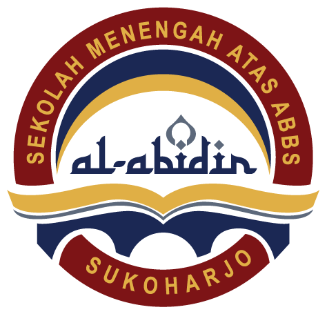

Selamat datang di halaman tautan PSAS! 🎉
Kumpulan link dan jadwal untuk persiapan Penilaian Sumatif Akhir Semester (PSAS)
Semester Genap 2026
Link Ujian Siswa
Klik link di bawah untuk mengakses persiapan ujian